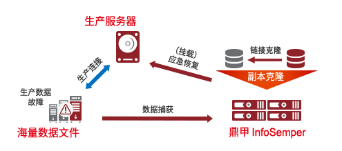
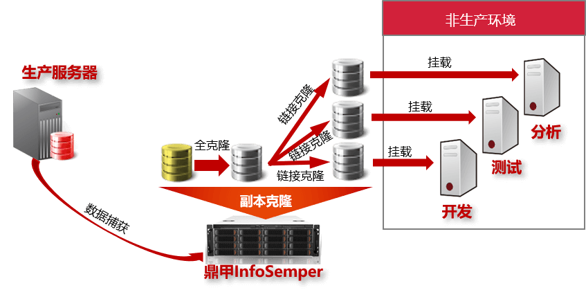

InfoSemper CDM 广泛应用于多种场景
- 海量数据的高效恢复
- 业务数据快速恢复及迁移
- 非生产环境的数据使用
场景描述
金融票据、医院、图书馆、档案馆、电商等生产环境中存在海量的图形、 影像、视频、文字等文件。这些文件数据需要提供给各种生产服务器使用，一旦发生数据故障等意外情况，需要进行快速恢复，保障业务的持续运行。

难点分析
- 海量数据无法周期全备
- 无法预备足够的存储空间作为备用环境
- 海量数据故障后采用常规恢复时间长
解决方案
- 采用“初始全量+永远增量”的数据捕获策略
- 存储接近生产实时数据的副本，无需另外备用环境
- 通过挂载方式，即时恢复到生产环境
场景描述
Oracle、SQL Server 等是企业常用的业务数据库。为了保障 业务数据的安全，企业建有备份、CDP、实时容灾等等保护系统。 同时为了保证业务顺畅运行，需要阶段性升级数据库运行环境。

难点分析
- 需要维护多种数据安全保护产品
- 这些数据保护产品在恢复数据上都存在不足
- 设备升级，数据迁移时间长，影响生产业务
解决方案
- 采用永远增量、连续日志实时保护（CLRP）等数据捕获技术，满足各种RPO的要求
- 利用副本和日志，实现任意时间点数据恢复，且能保证数据一致性
- 通过先迁移数据文件，再加上日志前滚，缩短割接时间，且不影响业务
场景描述
企业需要研发新的信息管理系统，需要搭建和生产环境相似的 测试环境，需要搭建内部或外部的业务培训平台。为了不影响 生产环境的业务运行和及数据安全，往往通过维护人员导出生 产数据，然后提供给非生产环境中使用。

难点分析
- 获取生产数据会影响生产业务运行
- 数据不能及时更新
- 需要人工处理，增加了运维管理成本
- 无法预备足够的中转存储空间
解决方案
- 对新增数据进行热捕获，不影响生产环境
- 通过周期性的数据复制获取业务新数据
- 通过任务配置方式完成减少人工操作的介入
- 在存储服务器中创建可挂载副本，无需另备存储空间